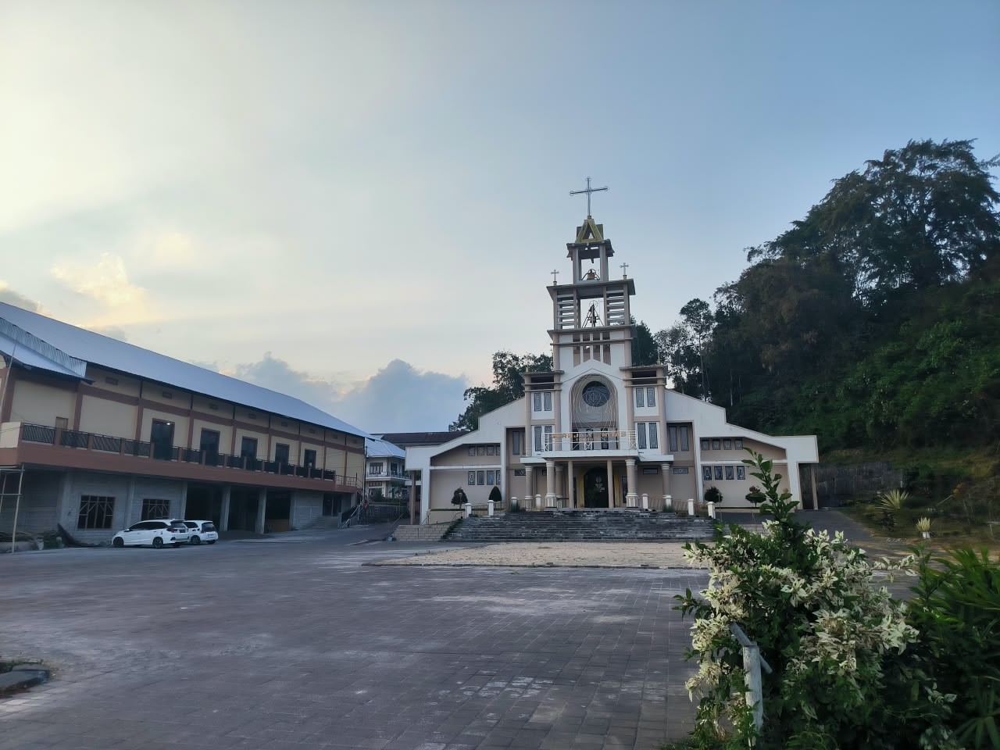
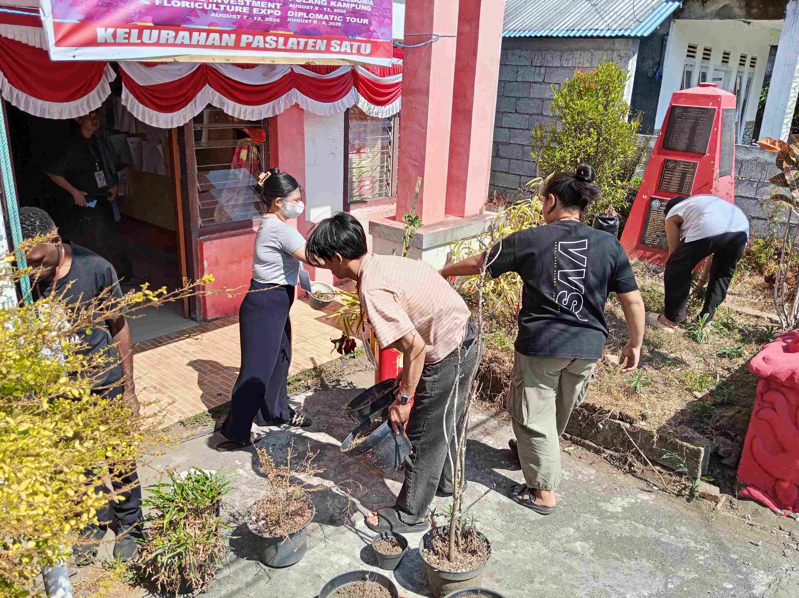
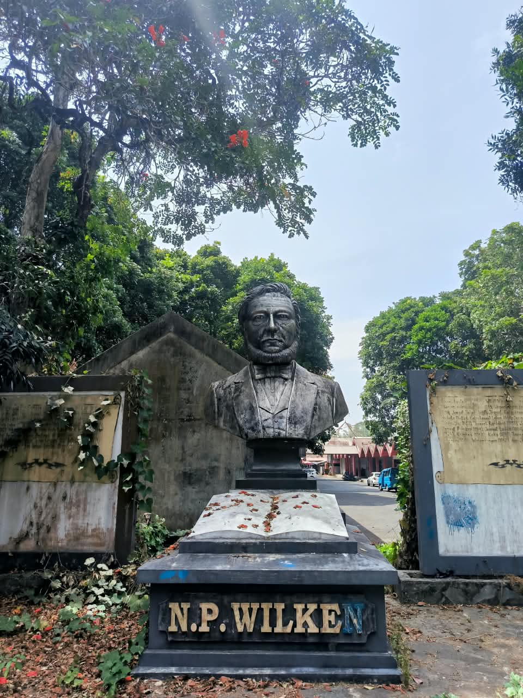

Jejak yang membentuk Paslaten 1
Paslaten 1 memiliki sejarah yang berkaitan erat dengan masyarakat Minahasa dan perkembangan wilayah Kota Tomohon.
Baca perjalanan sejarahKota Tomohon · Sulawesi Utara
Profil wilayah, sejarah, data penduduk, dan informasi Kelurahan Paslaten 1 dalam satu akses.
Kelurahan Paslaten 1 berada di Kecamatan Tomohon Timur, Kota Tomohon, Provinsi Sulawesi Utara. Wilayah seluas 2,96 km² ini merupakan bagian dari kawasan dataran tinggi Kota Tomohon.
Kehidupan masyarakatnya mencerminkan nilai kekeluargaan dan gotong royong yang kuat, sebagaimana tradisi Minahasa yang dikenal dengan sistem mapalus.
Kenali Paslaten 1Paslaten 1 memiliki sejarah yang berkaitan erat dengan masyarakat Minahasa dan perkembangan wilayah Kota Tomohon.
Baca perjalanan sejarahRuang untuk menampilkan lingkungan, kegiatan, dan kehidupan masyarakat Paslaten 1.



Temukan alamat kantor dan informasi kontak Kelurahan Paslaten 1.